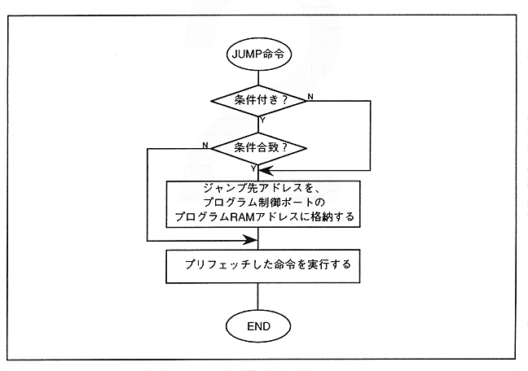

Realized by storing the jump destination address (Immediate Data) in the program RAM address of the program control port. Note that prefetched instructions are executed. The conditional JUMP instruction first checks the status of the program control port flag, and if the condition is met, stores the jump destination address in the program RAM address of the program control port. Refer to the JUMP instruction section in Section 4.5 “Instructions” for instruction format. Figure 4.2 shows the JUMP instruction execution flow.
Figure 4.2 JUMP instruction execution
